#install.packages("gapminder")
library(gapminder)
data("gapminder")
d <- gapminder vis-gapminder
vis
yacsda
ggquick
gapminder
string
Aufgabe
In dieser Fallstudie (YACSDA: Yet another Case Study on Data Analysis) untersuchen wir den Datensatz gapminder.
Sie können den Datensatz so beziehen:
Oder so:
d <- read.csv("https://vincentarelbundock.github.io/Rdatasets/csv/gapminder/gapminder.csv")Ein Codebook finden Sie hier.
Die Forschungsfrage lautet:
Was ist der Einfluss des Kontinents und des Bruttosozialprodukts auf die Lebenswartung?
- Abhängige Variable (metrisch),
y: Lebenserwartung - Unabhängige Variable 1 (nominal),
x1: Kontinent - Unabhängige Variable 2 (metrisch),
x2: Bruttosozialprodukt
Visualisieren Sie dazu folgende Aspekte der Forschungsfrage!
Aufgaben
- Visualisieren Sie die Verteilung von
yauf zwei verschiedene Arten. - Fügen Sie relevante Kennzahlen zur letzten Visualisierung hinzu.
- Visualisieren Sie die Verteilung von
x1undx2. - Visualisieren Sie die Verteilung von
ybedingt aufx1. - Fügen Sie relevante Kennzahlen zur letzten Visualisierung hinzu.
- Visualisieren Sie den Zusammenhang von
yundx2. - Verbessern Sie das letzte Diagramm, so dass es übersichtlicher wird.
- Fügen Sie dem letzten Diagramm relevante Kennzahlen hinzu.
- Fügen Sie dem Diagramm zum Zusammenhang von
yundx2eine Regressionsgerade hinzu. - Ersetzen Sie die Regressionsgerade durch eine LOESS-Gerade.
- Gruppieren Sie das letzte Diagramm nach
x1. - Dichotomisieren Sie
yund zählen Sie die Häufigkeiten. Achtung: Dichotomisieren wird von einigen Statistikern mit Exkommunikation bestraft. Proceed at your own risk. - Gruppieren Sie das letzte Diagramm nach den Stufen von
x1. - Variieren Sie das letzte Diagramm so, dass Anteile (relative Häufigkeiten) statt absoluter Häufigkeiten gezeigt werden.
Hinweise:
- Orientieren Sie sich im Übrigen an den allgemeinen Hinweisen des Datenwerks.
Lösung
Pakete starten
library(tidyverse)
library(easystats)
library(ggpubr)
library(ggstatsplot)Los geht’s
Umbenennen
Zur einfacheren Verarbeitung nenne ich die Variablen um:
d <-
d |>
rename(y = lifeExp, x1 = continent, x2 = gdpPercap)Visualisieren Sie die Verteilung von y auf zwei verschiedene Arten.
Das R-Paket ggpubr erstellt schöne Diagramme (basierend auf ggplot) auf einfache Art. Nehmen wir ein Dichtediagramm; die Variable y soll auf der X-Achse stehen:
ggdensity(d, x = "y")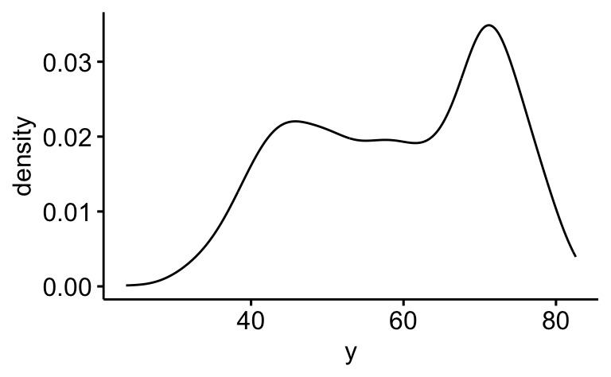
Beachten Sie, dass die Variable in Anführungsstriche gesetzt werden muss: x = "y".
Oder ein Histogramm:
gghistogram(d, x = "y")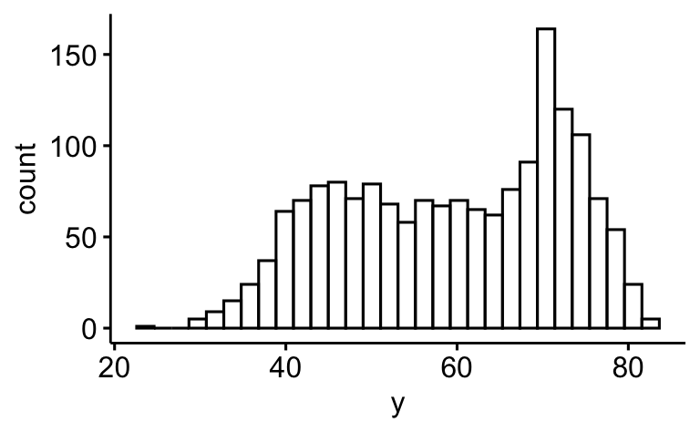
Fügen Sie relevante Kennzahlen zur letzten Visualisierung hinzu.
Um Diagramme mit Statistiken anzureichen, bietet sich das Paket ggstatsplot an:
gghistostats(d, x = y)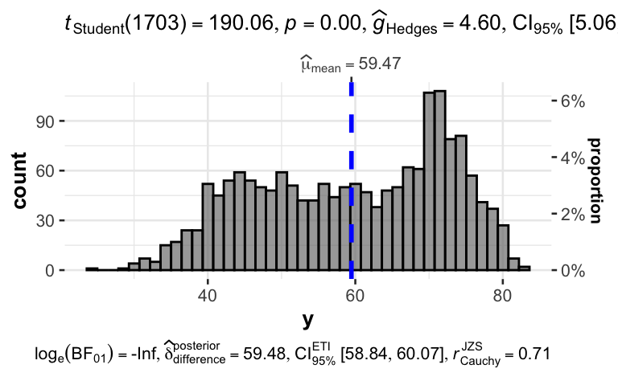
Beachten Sie, dass die Variable nicht in Anführungsstriche gesetzt werden darf: x = y.
Visualisieren Sie die Verteilung von x1 und x2.
x1
d_counted <-
d |>
count(x1) ggbarplot(data = d_counted, y = "n", x = "x1", label = TRUE)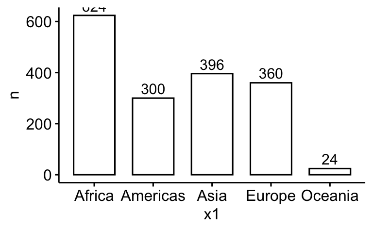
x2
gghistostats(d, x = x2)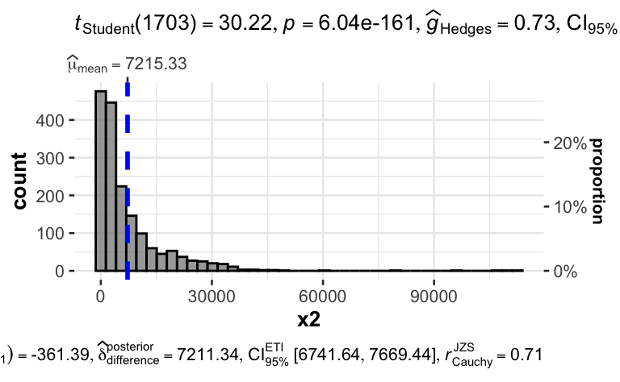
Visualisieren Sie die Verteilung von y bedingt auf x1
gghistogram(d, x = "y", fill = "x1")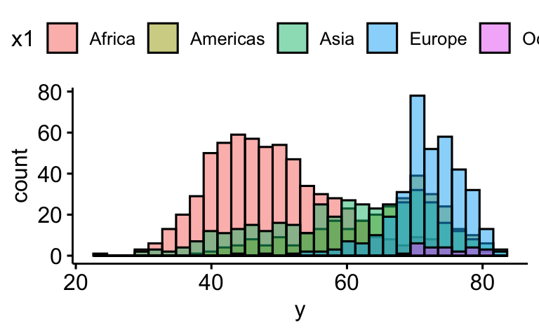
Oder so:
gghistogram(d, x = "y", facet.by = "x1")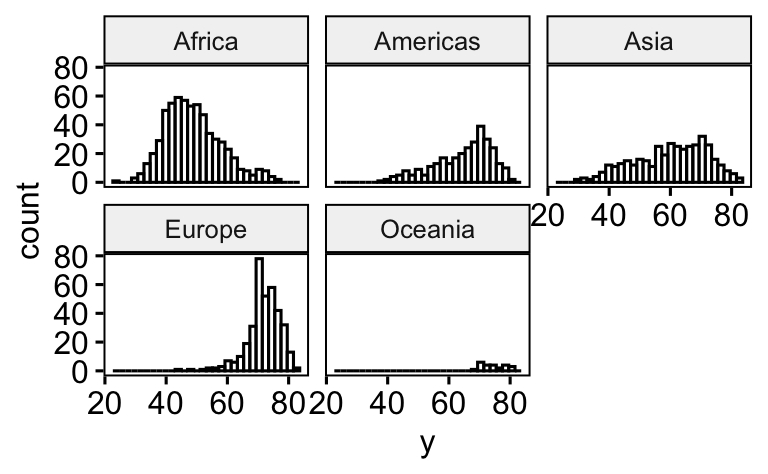
Fügen Sie relevante Kennzahlen zur letzten Visualisierung hinzu
grouped_gghistostats(d, x = y, grouping.var = x1)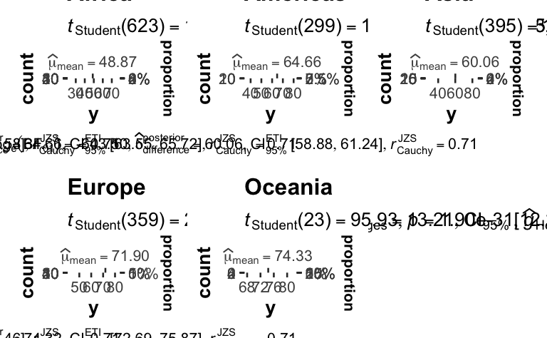
Visualisieren Sie den Zusammenhang von y und x2
ggscatter(d, x = "x2", y = "y")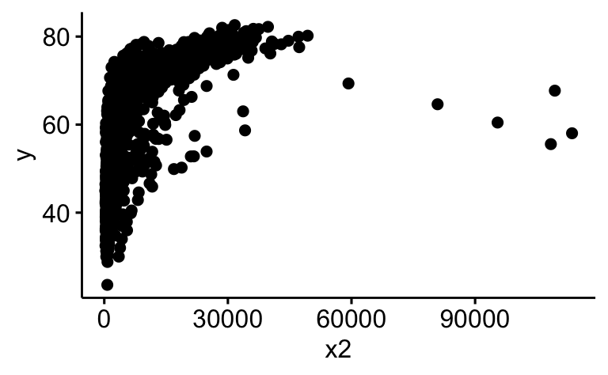
Verbessern Sie das letzte Diagramm, so dass es übersichtlicher wird
Es gibt mehrere Wege, das Diagramm übersichtlicher zu machen. Logarithmieren ist ein Weg.
d |>
mutate(x2 = log(x2)) |>
ggscatter(x = "x2", y = "y")
Synonym könnten wir schreiben:
d_logged <-
d |>
mutate(x2 = log(x2))
ggscatter(d_logged, x = "x2", y = "y")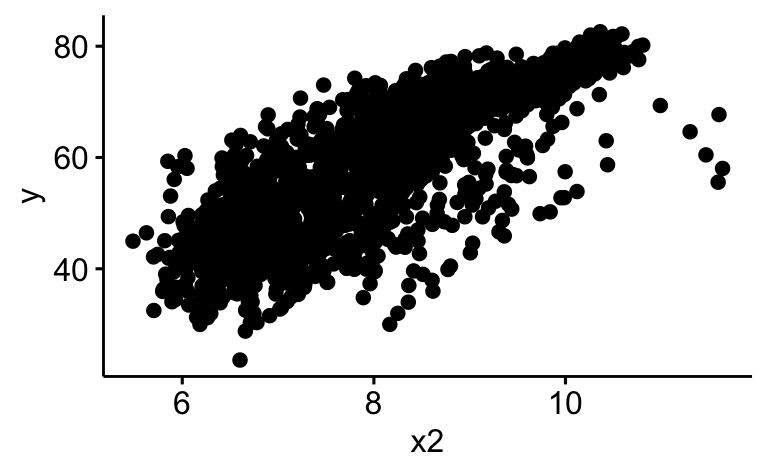
Fügen Sie dem letzten Diagramm relevante Kennzahlen hinzu
ggscatterstats(d_logged, x = "x2", y = "y")Fügen Sie dem Diagramm zum Zusammenhang von y und x2 eine Regressionsgerade hinzu
ggscatter(d_logged, x = "x2", y = "y", add = "reg.line",
add.params = list(color = "blue"))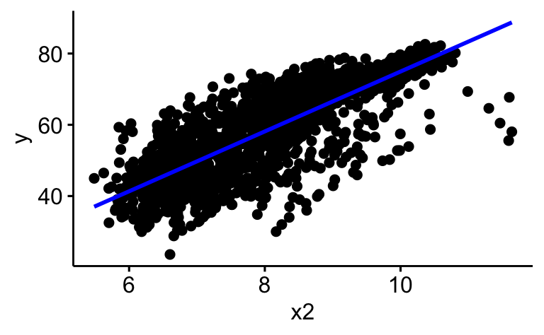
Ersetzen Sie die Regressionsgerade durch eine LOESS-Gerade
ggscatter(d_logged, x = "x2", y = "y", add = "loess",
add.params = list(color = "blue"))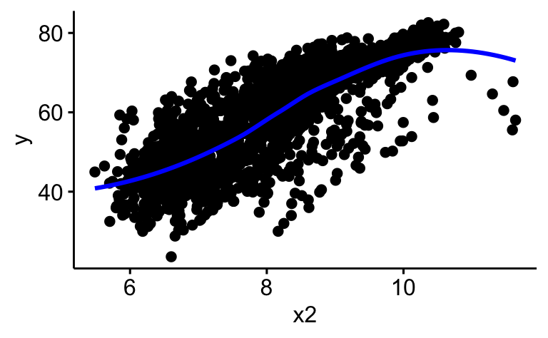
Gruppieren Sie das letzte Diagramm nach x1
ggscatter(d_logged, x = "x2", y = "y", add = "loess",
add.params = list(color = "blue"),
facet.by = "x1")
Dichotomisieren Sie y und zählen Sie die Häufigkeiten
Nehmen wir einen Mediansplit, um zu dichotomisieren.
d <-
d |>
mutate(y_dicho = ifelse(y > median(y), "high", "low"))d |>
count(y_dicho) |>
ggbarplot(x = "y_dicho", y = "n")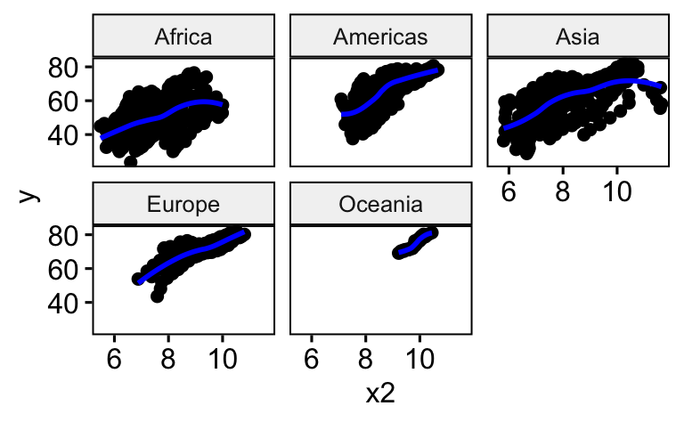
Gleich viele! Das sollte nicht verwundern.
Gruppieren Sie das letzte Diagramm nach den Stufen von x1
d_count <-
d |>
count(y_dicho, x1)
d_count| y_dicho | x1 | n |
|---|---|---|
| high | Africa | 64 |
| high | Americas | 211 |
| high | Asia | 207 |
| high | Europe | 346 |
| high | Oceania | 24 |
| low | Africa | 560 |
| low | Americas | 89 |
| low | Asia | 189 |
| low | Europe | 14 |
ggbarplot(d_count, x = "y_dicho", y = "n", facet.by = "x1")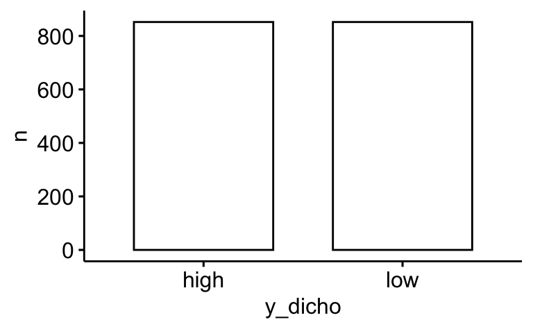
Variieren Sie das letzte Diagramm so, dass Anteile (relative Häufigkeiten) statt absoluter Häufigkeiten gezeigt werden
d_count <-
d_count |>
mutate(prop = n / sum(n)) |>
mutate(prop = round(prop, 2))
d_count| y_dicho | x1 | n | prop |
|---|---|---|---|
| high | Africa | 64 | 0.04 |
| high | Americas | 211 | 0.12 |
| high | Asia | 207 | 0.12 |
| high | Europe | 346 | 0.20 |
| high | Oceania | 24 | 0.01 |
| low | Africa | 560 | 0.33 |
| low | Americas | 89 | 0.05 |
| low | Asia | 189 | 0.11 |
| low | Europe | 14 | 0.01 |
Check:
d_count |>
summarise(sum(prop))| sum(prop) |
|---|
| 0.99 |
Gut! Die Anteile summieren sich zu ca. 1 (100 Prozent).
ggbarplot(d_count, x = "y_dicho", y = "prop", facet.by = "x1", label = TRUE)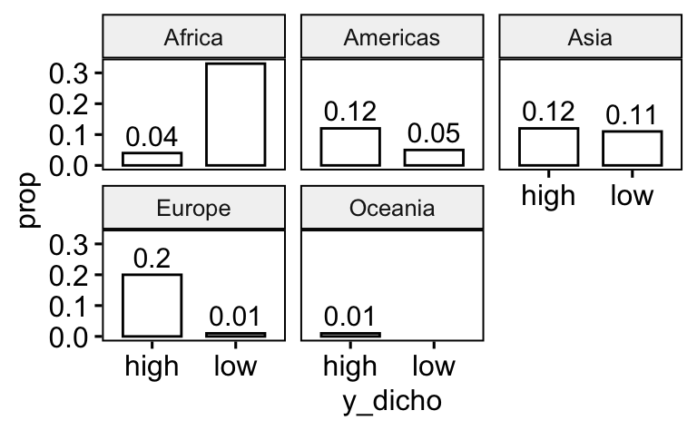
Man beachten, dass sich die Anteile auf das “Gesamt-N” beziehen.
Vielleicht möchten wir die Anteile lieber pro Stufe von x1 beziehen. Dazu gruppieren wir nach (und pro Stufe von) x1.
d_count <-
d_count |>
group_by(x1) |>
mutate(prop = n / sum(n)) |>
mutate(prop = round(prop, 2))
d_count| y_dicho | x1 | n | prop |
|---|---|---|---|
| high | Africa | 64 | 0.10 |
| high | Americas | 211 | 0.70 |
| high | Asia | 207 | 0.52 |
| high | Europe | 346 | 0.96 |
| high | Oceania | 24 | 1.00 |
| low | Africa | 560 | 0.90 |
| low | Americas | 89 | 0.30 |
| low | Asia | 189 | 0.48 |
| low | Europe | 14 | 0.04 |
ggbarplot(d_count, x = "y_dicho", y = "prop", facet.by = "x1", label = TRUE)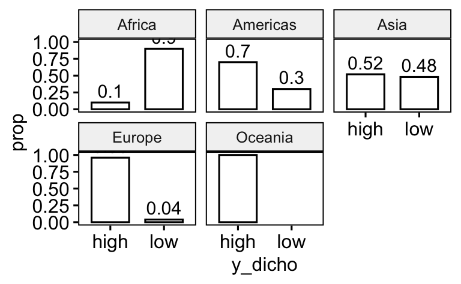
Categories:
- vis
- yacsda
- ggquick
- gapminder
- string